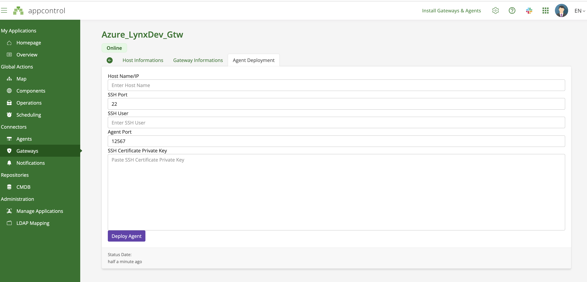

Automatic Deployment of Agents
Deploy Agents Automatically via the Gateway
AppControl simplifies the process of deploying agents in your infrastructure by leveraging the gateway. To automate the deployment of agents, AppControl requires SSH access to the target infrastructure using the private SSH key. Below are the steps to configure SSH, generate SSH keys on both Linux and Windows, and provide the necessary key to enable automatic deployment.
1. Configure SSH Access
For AppControl to deploy agents automatically, the gateway needs access to the target machines via SSH. Ensure that SSH is properly configured on your target systems.
- Port: By default, SSH uses port 22, but AppControl allows you to customize this if needed.
- User Permissions: The user account that AppControl will use for SSH must have sufficient permissions to install and manage agents on the target machine.
Note: The public SSH key must be added to the
~/.ssh/authorized_keysfile on the SSH server of the target machines. This ensures that AppControl can authenticate using the corresponding private SSH key.
2. Generate SSH Keys (Private Key Required by AppControl)
To allow AppControl to manage agent deployment via the gateway, the private SSH key must be provided. Follow the steps below to generate SSH keys on Linux or Windows.
Linux (or macOS)
To generate SSH keys on Linux or macOS:
- Open a terminal.
-
Run the following command to generate a new SSH key pair:
ssh-keygen -t rsa -b 2048 -f ~/.ssh/appcontrol_key-t rsa: Specifies the RSA algorithm.-b 2048: Specifies the key length (2048 bits).-f ~/.ssh/appcontrol_key: Saves the key pair to the specified file (appcontrol_key).
-
When prompted for a passphrase, press Enter to leave it empty (or add a passphrase if extra security is required).
This command will generate two files:
- Private key:
~/.ssh/appcontrol_key -
Public key:
~/.ssh/appcontrol_key.pub -
Add the public key to the
authorized_keysfile on the target machine:cat ~/.ssh/appcontrol_key.pub >> ~/.ssh/authorized_keys
Windows
To generate SSH keys on Windows, you can use either Git Bash or PowerShell (with OpenSSH).
Option 1: Using Git Bash
- Install Git for Windows if not already installed.
- Open Git Bash.
-
Run the following command to generate an SSH key pair:
ssh-keygen -t rsa -b 2048 -f ~/.ssh/appcontrol_key -
When prompted, press Enter to use the default file location, and leave the passphrase empty (or add one if preferred).
-
Add the public key to the
authorized_keysfile on the target machine:cat ~/.ssh/appcontrol_key.pub >> ~/.ssh/authorized_keys
Option 2: Using PowerShell (Windows 10/11)
- Open PowerShell as an administrator.
-
Run the following command to generate an SSH key pair:
ssh-keygen -t rsa -b 2048 -f $env:USERPROFILE\.ssh\appcontrol_key
This will generate two files:
- Private key:
C:\Users\YourUsername\.ssh\appcontrol_key -
Public key:
C:\Users\YourUsername\.ssh\appcontrol_key.pub -
Add the public key to the
authorized_keysfile on the target machine:Get-Content $env:USERPROFILE\.ssh\appcontrol_key.pub | Out-File -Append -Encoding ascii $env:USERPROFILE\.ssh\authorized_keys
3. SSH Server on Windows (Optional)
For Windows systems, you can optionally deploy an SSH server to allow AppControl to connect and manage agents. OpenSSH Server is an optional feature in Windows, which you can enable via the following steps:
- Go to Settings > Apps > Optional Features.
- Scroll down and click Add a feature.
- Search for OpenSSH Server, select it, and click Install.
For more detailed instructions, refer to the official Windows documentation.
Once installed, configure the SSH server, and ensure the public key is added to the authorized_keys file.
4. Deploy Agents via the Gateway
Once SSH is configured and the private key is provided, follow these steps to deploy agents using the AppControl gateway:
-
Select the Target Machines:
- In the AppControl dashboard, go to the "Deploy Agents" section and select the machines where agents should be deployed.
-
Verify Connectivity:
- AppControl will verify the SSH connection to the target machines using the private SSH key.
-
Deploy Agents:
- Once the connection is established, AppControl will automatically deploy the agents to the selected machines.
Installation Paths:
- On Windows: Agents will be installed in
C:/ProgramData/appcontrol/agent. - On Linux: The installation folder is
/opt/appcontrol/xcagent. - On macOS: The installation folder is
~/appcontrol/xcagent.
5. Troubleshooting SSH Connection
If you encounter issues with the SSH connection during the deployment process, check the following:
-
Private SSH Key:
- Ensure that the private SSH key is properly configured and uploaded to AppControl.
-
SSH Port and User Permissions:
- Verify that the SSH port and user permissions are correctly set up on the target machine.
-
Firewall and Network Configuration:
- Check firewall rules or network configurations that might block SSH access to the target machine.
6. Provide the Private SSH Key to AppControl
AppControl requires the private SSH key for authentication during agent deployment. The public key is added to the target machines in the ~/.ssh/authorized_keys file, and the private key remains with AppControl to establish the connection.
- Locate the Private Key:
- Linux:
~/.ssh/appcontrol_key - Windows:
C:\Users\YourUsername\.ssh\appcontrol_key
- Linux:
- Upload the Private Key to AppControl:
- Log in to the AppControl dashboard.
- Navigate to Gateway Configuration and select the gateway that will manage the agent deployment.
- Upload the private SSH key (
appcontrol_key). - AppControl will securely store the key and use it for deploying agents.
Note: The private SSH key remains confidential and is only used by AppControl to establish a secure SSH connection to the target machines. The corresponding public key should already be added to the
~/.ssh/authorized_keysfile on the target machines.
To open the deployment form, first select the gateway, then navigate to the "Deploy Agent" tab.
